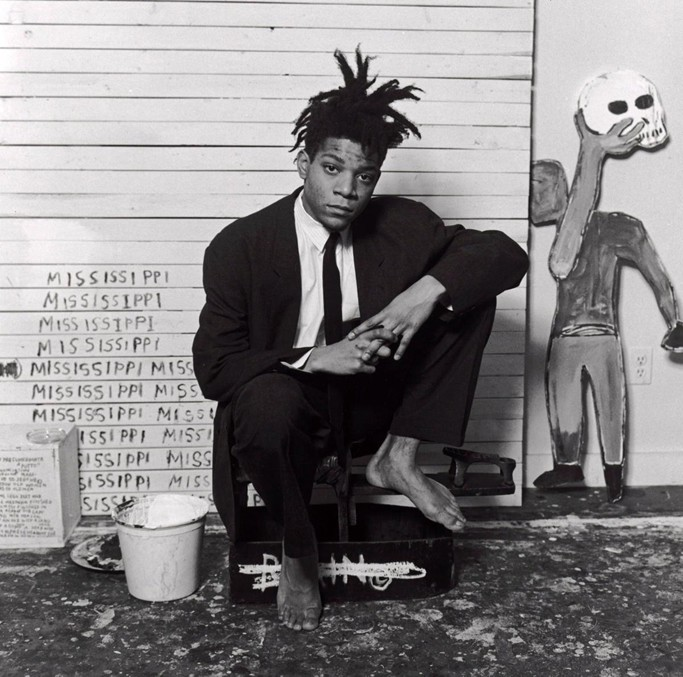

"Believe it or not. I can actually draw"
JEAN-MICHEL BASQUIAT
SELF TAUGHT ARTIST
In his earlier works, Basquiat was known for using a crown motif, which was his way of celebrating black people as majestic royalty or deeming them as saints

VIEW MORE OF HIS WORK